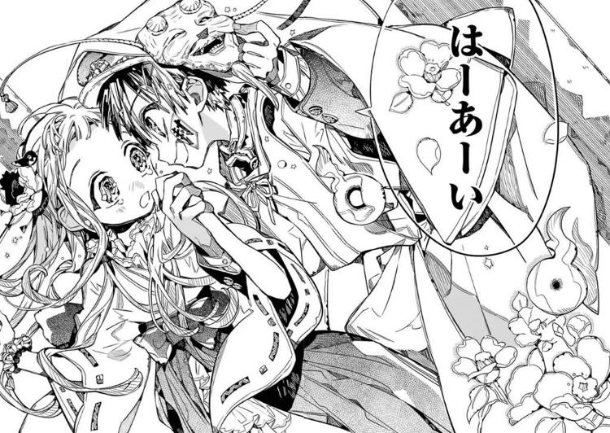

Reseña Toilet Bound Hanako-kun
Género: comedia, ciencia ficción
Tipo: manga
índice
Descripción
Toilet Bound Hanako-kun es una serie manga de comedia y ciencia ficción, escrita e ilustrada por Aida Iro, que comenzó a publicarse en la revista mensual Gekkan GFantasy en 2014.A principios de 2021, la editorial Ivrea comenzó a publicar una versión física de los tomos y, a día de hoy, se han publicado 17 de ellos.
Estos cuentan la historia de Yashiro, una estudiante de primer año de secundaria que intenta contactar con el fantasma de una leyenda urbana de su escuela por uno de sus problemas. En un giro de los acontecimientos, Yashiro se ve forzada a convertirse en la asistenta del fantasma, Hanako, y a investigar sobre otras leyendas urbanas de la escuela junto a él.
Adaptaciones
El 9 de enero el estudio de animación Lerche realizó una adaptación (anime) de los mangas, la cual terminó de emitirse el 26 de marzo de ese mismo año.
Opinión
Al ser un manga de Aida Iro, lo que hay que destacar esta claro. Visualmente hablando, el autor destaca por sus preciosas ilustraciones que hacen que sus mangas sean fácilmente reconocibles. Pero no destaca únicamente por el arte, sino también por tener una historia original y que atrapa muy rápidamente. Si estoy obligada a resaltar un aspecto negativo de estos puede ser que a veces se sienten infantiles, pero no hay que olvidar que, a pesar de no ser para todos los públicos, están pensados para un público muy amplio. Esta es una serie muy recomendable para cualquier fanatico del anime o el manga que busque pasar un buen rato.
